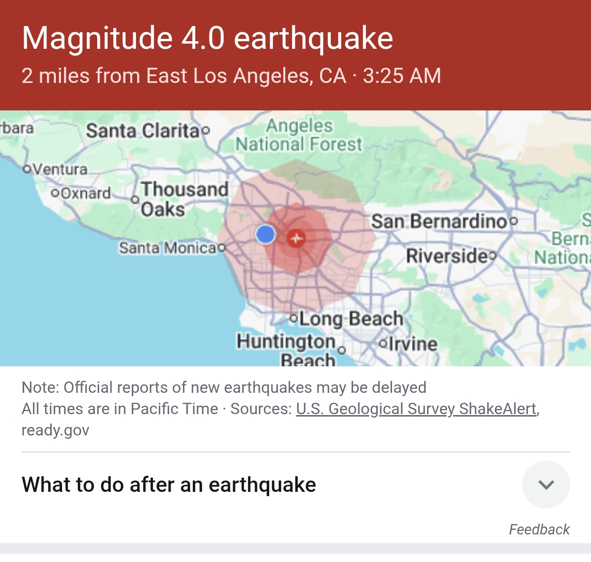

새벽에 자다 깻네 존나 무섭네... 무슨 거대한 파도가 쓸고 지나간것처럼 온집안이 흔들다 간거같음
천장 무너지는줄 알았다 와..
밖에 차 빵빵 대고 헬리콥터 날라다닌다 새벽 3시에 ㅅㅂ

새벽에 자다 깻네 존나 무섭네... 무슨 거대한 파도가 쓸고 지나간것처럼 온집안이 흔들다 간거같음
천장 무너지는줄 알았다 와..
밖에 차 빵빵 대고 헬리콥터 날라다닌다 새벽 3시에 ㅅㅂ
어어... 탈출해라
산 안드레아스 단층 입갤ㄷㄷㄷ
gta의 복귀와 함께ㄷㄷ
ㅅㅂ 또 주가 떨어지나
gta6때문에 화낫너
로스산토스 지진 ㄷㄷ
저긴 왜 지진난거임?
샌안드레아스 단층 때문일껄
태평양 불의고리
와 도시한가운데는 진도작아도 느낄만한듯ㅋㅋ
고질라 등장
4.0정도면 저기서 흔한가? 그래도 일본정도는 아닌가?
일본과 똑같은 불의고리라 지진 흔한편
그정도 아니였다 개붕아.. 호들갑이 좀 심하네
비틱ㄴ
그 정돈 흔하잖아 오바 ㄴㄴ
얼마전에 나고야에서 5.5지진 맞아봤는데 ㅈ되더라 좌우로 몸이 30cm정도 흔들림